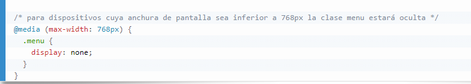
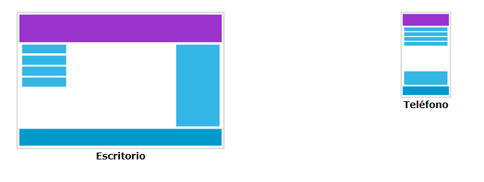
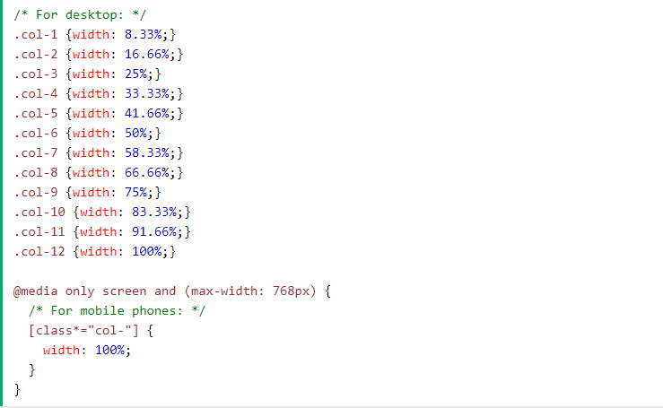
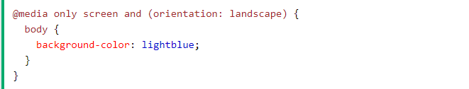
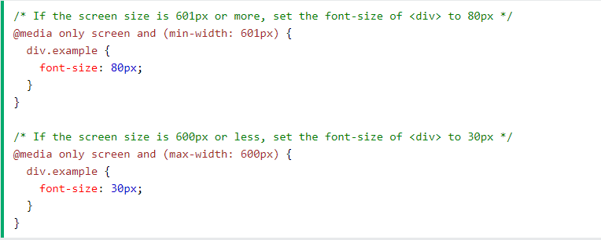

Responsivos con Media Queries
La sintaxis de las media queries consisten de un media type y una o mas expresiones, implicando características del medio, la cual se resuelve como verdadera o falsa. El resultado de la consulta es verdadera si el tipo de medio especificado en el media query concuerda con el tipo de dispositivo que está siendo mostrado y todas las expresiones en el media query son verdaderas.
Podemos agregar un punto de interrupción donde ciertas partes del diseño se comportarán de manera diferente en cada lado del punto de interrupción.
Ejemplo: Cuando la pantalla (ventana del navegador) es más pequeña que 768px, cada columna debe tener un ancho del 100%:
Orientación: retrato / paisaje
Las consultas de medios también se pueden utilizar para cambiar el diseño de una página según la orientación del navegador.
Tamaño de fuente variable
Ejemplo:
medidas para mejorar el SEO
Analizar la competencia
Observar las distintas acciones o prácticas de los principales competidores de la empresa ayudará a determinar si la estrategia SEO es la correcta y si los robots de los motores de búsqueda están rastreando correctamente la página web de la compañía para posicionarla.
Buscar las keywords o palabras claves
Seleccionar las palabras claves en torno a las cuales se desea posicionar al negocio es esencial para las estrategias de comunicación y marketing. Analizar cuáles son las palabras clave más buscadas por el cliente objetivo dentro del sector es un factor determinante para un buen posicionamiento en buscadores. Gracias a herramientas como Google Analytics se pueden descubrir las keywords más utilizadas por la competencia o las palabras clave más empleadas por los agentes del sector.
Trabajar las URL
De cara a mejorar la estrategia SEO, también hay que prestar atención a las URLs que conforman la página web. Estas deben ser cortas, aportar la información relevante y contener palabras clave del contenido al que acompañan. Además, es aconsejable evitar artículos, preposiciones, acentos o la letra ñ.
Revisar los enlaces rotos
Los enlaces rotos son perjudiciales para el posicionamiento SEO, ya que son penalizados por los robots de Google. Por ello, es necesario revisar los enlaces de la página en busca de posibles errores 404, páginas no seguras o con poca fiabilidad.
Evitar contenido duplicado
El contenido copiado o duplicado es motivo de penalización para los principales motores de búsqueda y, por lo tanto, no quedará indexado. Es importante que todo el contenido publicado sea original y exclusivo, puesto que los robots de Google pueden detectar fácilmente cuando dos páginas web tienen el mimo contenido.